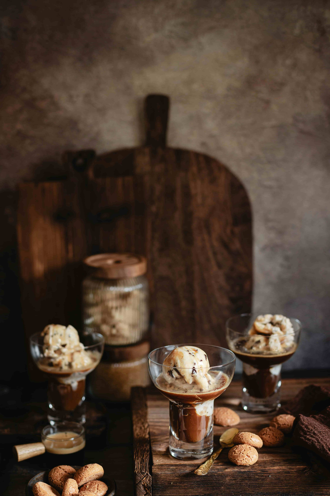
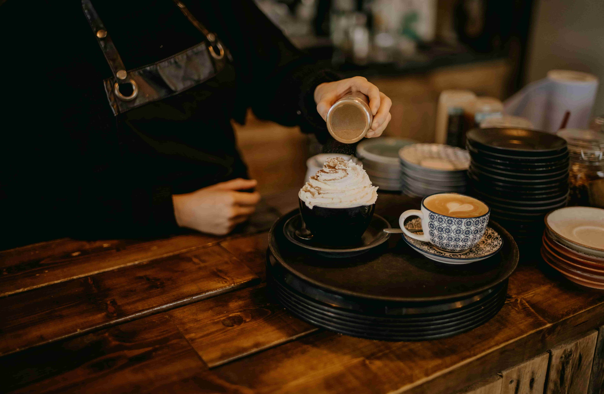
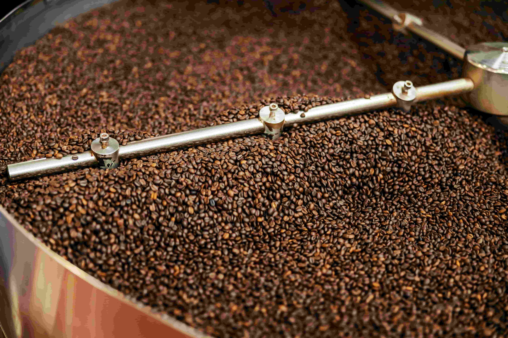
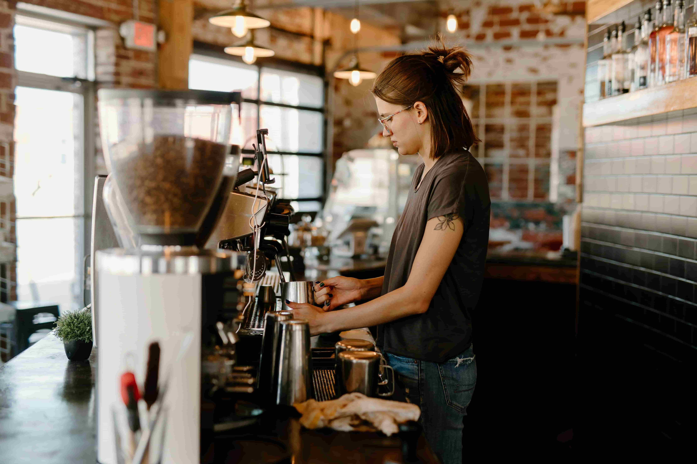

Menu
Kahvilastamme löydät herkut pienempään suolaisen nälkään tai makeanhimoon. Menussamme on kattava valikoima erilaisia suolaisia piirakoita, leipiä, kakkuja ja muita leivonnaisia. Kahvimme on omassa paahtimossa paahdettua luomukahvia.
Tutustu tarjontaan
Pienpaahtimo


Paahtimomme sijaitsee Vaasan keskustan sydämessä Ylätori 2. Kahvin paahtaminen on meille intohimolla tehtävää käsityötä ja paahdamme kahvin aina juuri täydelliseen paahtoasteeseen. Olemme omistautuneita laadukkaalle luomukahville, sekä haluamme olla osa kestävää kahvin tuotantoa ja näin suojella luonnon, sekä eläinten hyvinvointia.
Tutustu paahtimoommeArvot
Olemme pieni paikallinen Vaasalainen paahtimo ja kahvila, jossa jokainen papu paahdetaan sekä tarjoillaan lähellä sydäntä.
Meille tärkeimpiä arvoja on hyväntuulisuus, merkityksellisyys, tinkimättömyys sekä välittäminen. Haluamme kahvilamme ja kahvimme olevan osa sinulle tärkeitä hetkiä. Haluamme olla kohtaamispaikka, jossa on aina hyvä olla. Asiakas voi aina luottaa siihen, että tuotteemme on valmistettu vastuullisesti ja laadukkaasti. Suosimme lähellä tuotettuja raaka-aineita sekä luomua ja se on tuotteidemme herkullisen maun salaisuus.
Lue meistä lisää